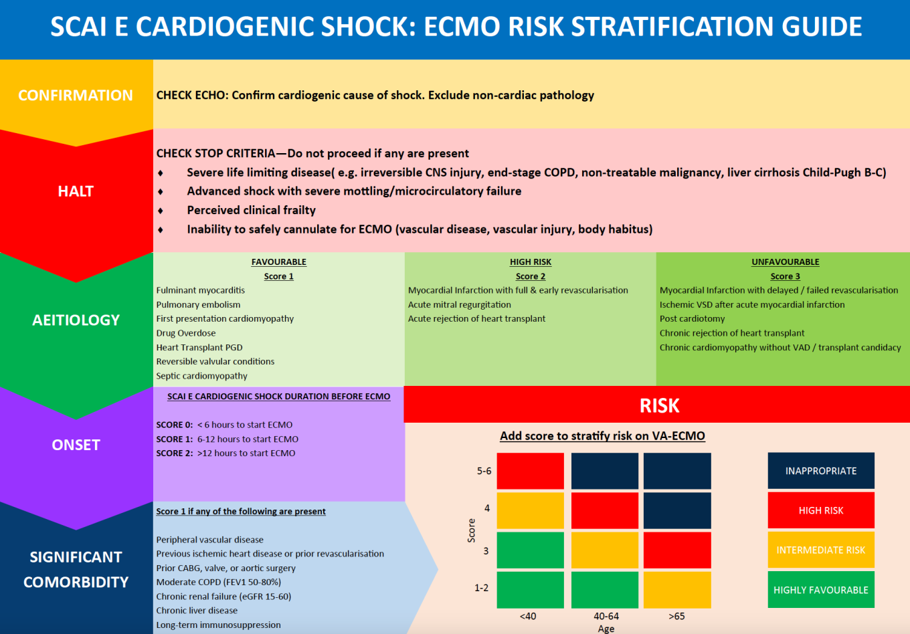
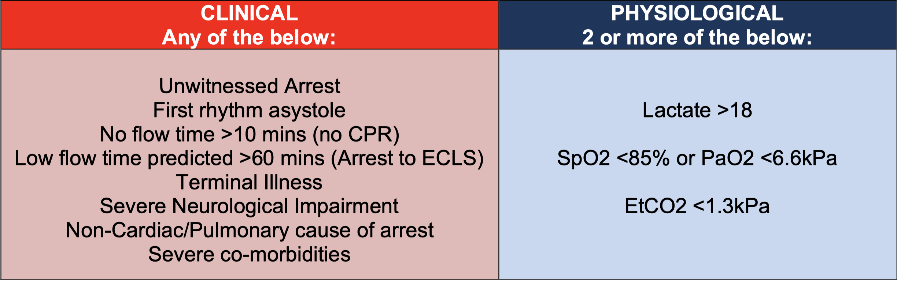

Section 1: Indications for VA-ECMO
Patient selection criteria for cardiogenic shock and E-CPR
Two Main Indication Categories
1. V-A ECMO for Cardiogenic Shock
This is likely to be the predominant category and patient selection in this group can be undertaken in a more rigid and thorough way, given there is often less time pressure.
2. V-A ECMO for E-CPR (Extracorporeal CPR)
There is significant time pressure. However, a rapid telephone discussion between the Bristol ECMO consultant and a 2nd ECMO decision maker (Local mentor, RBH ECMO consultant or HH ICU consultant) is still required.
1. V-A ECMO for Cardiogenic Shock
Patient Selection - Inclusion Criteria
All of the following must be present:
- SCAI D-E shock (See Appendix 2 for guidance)
- AND Persisting shock indices, despite full optimisation of conventional therapy
- AND Considered a suitable candidate for escalating MCS by the cardiogenic shock MDT (Bristol and RBH/HH ECMO consultant - early liaison is key)
Exclusion Criteria
Any of the following are exclusions:
- Active/uncontrolled bleeding
- Irreversible and/or chronic heart failure (NYHA 3-4) without VAD/transplant options
- End-stage COPD / other respiratory disease (without lung transplant options)
- Liver cirrhosis Child-Pugh B or C
- Irreversible severe CNS injury
- Chronic renal failure CKD 5 or dialysis dependency
- Terminal illness or non-treatable malignancy
- Perceived clinical frailty
Risk Stratification
If the patient meets the inclusion / exclusion criteria, then a further analysis of risk:benefit should be conducted, using:
- SAVE score (MDCalc SAVE Score)
- ECMO risk stratification matrix (Figure 1 below)

- Red (High Risk) or Blue (Inappropriate) on ECMO risk stratification matrix
- SAVE score class III – V
If patients in these categories are cannulated, they should be transferred rapidly to an advanced heart failure centre site, rather than remaining on the Bristol site.
SCAI E Cardiogenic Shock: ECMO Risk Stratification Guide
Step 1: CONFIRMATION
CHECK ECHO: Confirm cardiogenic cause of shock. Exclude non-cardiac pathology
Step 2: HALT - CHECK STOP CRITERIA
Do not proceed if any are present:
- Severe life limiting disease (e.g. irreversible CNS injury, end-stage COPD, non-treatable malignancy, liver cirrhosis Child-Pugh B-C)
- Advanced shock with severe mottling/microcirculatory failure
- Perceived clinical frailty
- Inability to safely cannulate for ECMO (vascular disease, vascular injury, body habitus)
Step 3: AETIOLOGY
| FAVOURABLE Score 1 |
UNFAVOURABLE Score 2 |
UNFAVOURABLE Score 3 |
|---|---|---|
|
|
|
Step 4: SCAI E CARDIOGENIC SHOCK DURATION BEFORE ECMO
RISK - Add score to stratify risk on VA-ECMO
- SCORE D: <6 hours to start ECMO
- SCORE E: 6-12 hours to start ECMO
- SCORE F: >12 hours to start ECMO
Step 5: SIGNIFICANT COMORBIDITY
Score 1 if any of the following are present:
- Peripheral vascular disease
- Previous ischaemic heart disease or prior revascularisation
- Prior stroke, MI, or aortic surgery
- Age >70 years
- Chronic renal failure (eGFR 15-60)
- Chronic liver disease
- Long-term immunosuppression
RISK STRATIFICATION MATRIX
| Total Score | SCAI Duration <40 | SCAI Duration 40-64 | SCAI Duration >65 |
|---|---|---|---|
| 5-6 | HIGH RISK | INAPPROPRIATE | INAPPROPRIATE |
| 4 | INTERMEDIATE RISK | HIGH RISK | INAPPROPRIATE |
| 3 | HIGHLY FAVOURABLE | INTERMEDIATE RISK | HIGH RISK |
| 1-2 | HIGHLY FAVOURABLE | HIGHLY FAVOURABLE | INTERMEDIATE RISK |
Post-Cardiotomy Patients
The above risk stratification applies equally to post-cardiotomy patients – see also Section 7: Post Cardiotomy patient specifics
Pre-operative High Risk Cases
If elective cardiac surgery is deemed high risk for requiring post-cardiotomy mechanical support, there should be pre-operative discussion and decision making regarding suitability. This should be instigated by the cardiac surgical and cardiac anaesthesia teams, initially in liaison with the local Bristol ECMO consultant. If decision making is unclear, then a discussion with the RBH/HH ECMO and Cardiac surgical teams via a "shock call" is required.
Unpredicted or Emergency Post-cardiotomy Support
For unpredicted or emergency post-cardiotomy mechanical support, the cardiac anaesthesia and cardiac surgical teams should liaise with the local Bristol ECMO consultant early. If decision making is unclear, then a discussion with the RBH/HH ECMO and Cardiac surgical teams via a "shock call" is required.
2. V-A ECMO for E-CPR
Inclusion Criteria for E-CPR
- Refractory cardiac arrest with failure to achieve ROSC after 3 cycles of ALS
Exclusion Criteria

Full screening to exclude all potential contraindications for V-A ECMO is generally not possible whilst a patient is in refractory cardiac arrest. Instead the following RAPID STOP CRITERIA (Figure 2) should be used to screen out inappropriate candidates for E-CPR.
RAPID STOP CRITERIA for E-CPR
| CLINICAL Any of the below: |
PHYSIOLOGICAL 2 or more of the below: |
|---|---|
|
|
E-CPR Activation Process
The clinical criteria should be gathered rapidly from patient notes whilst the standard ALS algorithm proceeds. If none are met, a direct call to the Bristol Adult ECMO consultant (via a 2222 call to switchboard, or the ICU Outreach Registrar – Ext 27139) should be made.
The beginning of the conversation should state "This is an E-CPR call", followed by a brief summary of the case and the patient location.
The Bristol ECMO consultant will make a decision about whether to continue to assess for E-CPR – and if so, will give instructions for further team activation and patient location. The physiological criteria can be established during the ECMO consultant assessment.
Appendix 3 contains a quick reference card for the BRI/ BHI e-CPR activation algorithm.
Key Points Summary
Cardiogenic Shock
- SCAI D-E shock with persisting shock indices despite optimal conventional therapy
- MDT decision essential: Bristol and RBH/HH ECMO consultant agreement via "shock call"
- Risk stratification mandatory: SAVE score AND ECMO risk stratification matrix
- Bristol independent cannulation restriction: Red/Blue on matrix OR SAVE class III-V require RBH/HH discussion
- 8 absolute exclusions: Active bleeding, irreversible/chronic HF without options, end-stage respiratory/liver/renal/CNS disease, terminal illness, frailty
- Duration matters: <6hrs to ECMO = lower risk, >12hrs = higher risk
- Favourable aetiologies: Myocarditis, PE, drug overdose, septic cardiomyopathy
- Post-cardiotomy: Same risk stratification applies, requires cardiac surgery involvement
E-CPR
- Inclusion: Refractory cardiac arrest after 3 cycles of ALS
- RAPID STOP CRITERIA: ANY clinical criterion OR ≥2 physiological criteria = NOT suitable
- Clinical exclusions: Unwitnessed, asystole, no-flow >10min, low-flow >60min, terminal illness, severe neuro impairment, non-cardiac cause, severe comorbidities
- Physiological exclusions (≥2): Lactate >18, SpO₂ <85%/PaO₂ <6.6kPa, EtCO₂ <1.3kPa
- Activation: State "This is an E-CPR call" to Bristol ECMO consultant via 2222
- Time critical: Gather clinical criteria during ALS, physiological criteria during ECMO assessment
- 2nd decision maker required: Local mentor, RBH ECMO consultant, or HH ICU consultant